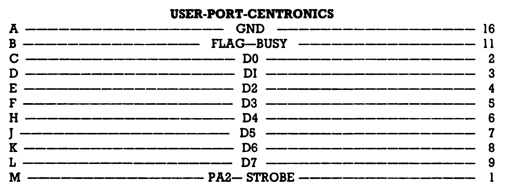

Die ideale Ergänzung
Wie in der letzten Ausgabe versprochen, sollen nun auch die Besitzer von MPS 802- und Epson-Druckern zu ihrem Recht kommen — hier sind die Druckertreiber und der Zeichensatz-Editor für unser Listing des Monats aus der Ausgabe 6/86 »Master-Text«.
Sicherlich werden Sie schon mit Spannung auf diese zusätzlichen Programme zu Master-Text gewartet haben. Doch bevor es an die Beschreibung der Bedienung geht, vorab einige Hinweise zum Eingeben:
- Laden Sie sich das Programm »INSTALL« aus der letzten Ausgabe in Ihren Computer und entfernen Sie die REM-Befehle aus den Zeilen 110, 120, 140, 10120.
- Löschen Sie die Zeile 10121.
- Speichern Sie das Programm »INSTALL« unter gleichem Namen.
Jetzt brauchen Sie nur noch die vier Listings »MPS 802«, »NORMAL«, »CENTRONIC« und »UMLAUT2« (Listing 1 bis 4) mit dem MSE einzugeben und auf Ihrer Master-Text-Diskette zu speichern. Damit ist »Master-Text« komplett.
Mit dem Programm »Install« können Sie nun Ihren Drucker einstellen.
Starten Sie das Programm, so haben Sie die Auswahl zwischen
1) Normal IEC + RS232 (ASCII)
2) Centronic (ASCII)
3) MPS801 + VC1525 (CBM)
4) MPS802 + VC1526
5) individuell
Normal IEC (Punkt 1) sollten Sie wählen, wenn Sie einen ASCII-Drucker mit Interface am IEC-Bus oder auch eine Schreibmaschine an der RS232-Schnittstelle betreiben. Mit Centronic (Punkt 2) können Sie Ihren Drucker mit Centronics-Schnittstelle direkt am User-Port anschließen (Pinbelegung in Bild 1). Beim MPS 801 und VC 1525 (auch MPS 803) (Punkt 3) werden die Umlaute im Bitmuster-Modus gesendet.

Entsprechendes gilt bei Punkt 4 für die Drucker MPS 802 und VC1526. Es werden alle deutschen Sonderzeichen gedruckt. Auch die Anführungszeichen werden in Grafik ausgegeben, um zu verhindern, daß die Steuerzeichen revers gedruckt werden. Die Revers-Schrift ist weiterhin verfügbar. Außerdem ist das Unterstreichen von einzelnen Wörtern, ganzen Sätzen oder Abschnitten möglich. Führende Leerzeichen in einer Zeile werden dabei nicht unterstrichen. Die Unterstreichungwird mit CHR$(2) ein- und mit CHR$(130) ausgeschaltet. Eine Aufstellung aller Steuerzeichen für die MPS 802-Drucker finden Sie in der Tabelle.
Unter Punkt 5 können Sie eigene Schnittstellen generieren. Diese Schnittstellen sollten den Namen »INDI« tragen, in den Bereich $9A00 bis $9FFF geladen und mit SYS 39424 installiert werden. Nachdem Sie Ihren Drucker installiert haben, wird automatisch das Textprogramm nachgeladen.
Text via RS232 senden
Wenn Sie im »Install«-Programm den Punkt 1 (Normal und RS232) gewählt haben, können Sie Ihre Texte nicht nur über den seriellen Port, sondern auch über die im C 64 eingebaute RS232-Schnittstellen-Software ausgeben. Wenn Sie beispielsweise einen Text auf einem RS232-Drucker ausgeben oder an einen anderen Computer senden möchten, brauchen Sie nur die nachfolgend beschriebenen Punkte genau zu beachten. Daß Sie zum Anschluß eines RS232-Druckers noch ein Interface benötigen, das für die notwendigen Pegel sorgt, ist dabei natürlich selbstverständlich. Geräte, die über RS232 angesprochen werden sollen, haben generell die Geräteadresse »2«. Stellen Sie deshalb im »Dienst«-Menü unter dem Auswahlpunkt »Druckerparameter« die Geräteadresse auf »2«. Die Frage nach der Sekundäradresse können Sie überspringen. Nun kommt aber die wichtigste Einstellung — die Parameterzahl für die RS232-Schnittstelle. Hier können Sie festlegen, wie schnell übertragen, mit welchem Protokoll, wieviele Stoppbits verwendet werden und welches Handshake vereinbart ist. Die Einstellung erfolgt über zwei hexadezimale Zahlen (also vierstellig), deren Bedeutung nun erläutert wird.
Die erste Zahl: Die niederwertigen vier Bits der ersten Zahl bestimmen die Geschwindigkeit mit der gesendet werden soll (1 = 50, 2 = 75, 3 = 110, 4 = 134.5, 5 = 150, 6 = 300, 7 = 600, 8 = 1200, 9 = 1800,10 = 2400 bit/s). Bit 5 und 6 bestimmen die Anzahl der zu sendenden Daten. (0 = 8 Bits, 32 = 7 Bits, 64 = 6 Bits, 96 = 5 Bits) Bit 7 bestimmt die Anzahl der Stoppbits (0 = ein Stoppbit,128 = zwei Stoppbits). Um den Wert der ersten Zahl zu bestimmen, summieren Sie die zutreffenden Zahlen und wandeln diese in eine Hexadezimalzahl.
Die zweite Zahl: Das erste Bit dieser Zahl bestimmt die Handshakeleitung. (0 = 3-Draht Handshake, l = X-Draht Handshake). Bit 4 bestimmt die Übertragungsart (0=Vollduplex, 16 = Halbduplex). Die Bits 5 bis 7 bestimmen schließlich die Art der Paritätsprüfung (0 = keine Paritätsprüfung; kein achtes Datenbit, 32 = ungerade Parität, 96 = gerade Parität, 160 = keine Paritätsprüfung; achtes Datenbit immer 1, 224 = keine Paritätsprüfung; achtes Datenbit immer 0). Addieren Sie wieder die zutreffenden Werte in der ersten Spalte und wandeln Sie die Zahl in eine Hexadezimalzahl. Dann tragen Sie die beiden Zahlen in das Feld, das für die RS232-Schnittstelle vorgesehen ist, ein. Hier noch ein Beispiel: Angenommen, Sie wollen einen Text per Akustikkoppler mit einer Rate von 300 bit/s übertragen und Sie wollen 7 Bit senden, so würden Sie für die erste Zahl 6 + 32 + 0 = 38 (entspricht hexadezimal $26) erhalten. Wenn Sie 3-Draht-Handshake haben, den Akustikkoppler Vollduplex betreiben und aufkeine Parität (achtes Bit gleich 0) prüfen wollen, so erhalten Sie für die zweite Zahl 0 + 0 + 224 ( = $E0 als Hexadezimalzahl). Sie müßten in das betreffende Feld also »26E0« eintragen.
Der Zeichensatz-Editor
Was wäre ein gutes Textprogramm ohne einen Zeichensatz-Editor? Nun, bei Master-Text brauchen Sie nicht darauf zu verzichten. Die beiden Programme »ZEICHEN-EDITOR V1.0« und »Z.E.Tl« ermöglichen es Ihnen, Ihren eigenen Zeichensatz zu erstellen. Geben Sie das Programm »Z.E.Tl« (Listing 5) bitte mit dem MSE ein, für das Programm »ZEICHEN-EDITOR V1.0« (Listing 6) verwenden Sie bitte den Checksummer V3.
Start des Zeichen-Editors
Legen Sie die Programmdiskette in das Laufwerk mit der Gerätenummer 8. Laden und Starten Sie das Programm »ZEICHEN-EDITOR V1.0« (Listing 6). Das Maschinen-Programm »Z.E.Tl« wird jetzt geladen und gestartet. Nach dem Laden befinden Sie sich im Editor. Laden Sie als erstes den Zeichensatz (Programm »Zeichensatz«), den wir in der letzten Ausgabe abgedruckt haben (siehe Hauptmenü).
Editor
Mit den Cursortasten können Sie sich, wie im Basic, in dem 8 x 8 Punkte großen Feld bewegen. Mit der <CLR/HOME >-Taste gelangen Sie in die linke obere Ecke. Die <SHIFT> + <CLR/HOME>-Taste löscht das 8 x 8-Feld. Mit der <RETURN>-Taste gelangen Sie an den Anfang der nächsten Zeile. Die Leertaste löscht den Punkt unter dem Cursor, die <*>-Taste setzt diesen Punkt. Mit der <F1 >-Taste gelangen Sie schließlich ins Hauptmenü.
Hauptmenü
Im Hauptmenü können Sie mit den Funktionstasten < Fl > bis <F8> verschiedene Funktionen des Zeicheneditors aufrufen. Es folgt eine Tabelle der Zuordnungen:
<F1>: Sprung zurück in den Editor.
<F2>: Das Zeichen, das sich in dem 8 x 8-Feld befindet, wird auf die Taste gelegt, die Sie nach der <F2>-Taste gedrückt haben.
<F3>: Das Zeichen, dessen Taste Sie nach der < F3 > -Taste gedrückt haben, wird aus dem Zeichensatz, den Sie gerade bearbeiten, in dem 8 x 8-Feld zur Anzeige gebracht. Es kann nun mit der <F1>-Taste editiert werden.
<F4>: Das Zeichen, dessen Taste Sie nach der < F4 > -Taste gedrückt haben, wird aus dem < ROM > -Zeichensatz in dem 8 x 8-Feld zur Anzeige gebracht. Es kann nun mit der < Fl >-Taste editiert werden.
<F5>: Nach dem Druck auf < F5 > gelangen Sie in eine Eingabemaske. In dieser müssen Sie den Zeichensatznamen eingeben. Wenn Sie »e« als Namen eingeben, gelangen Sie in das Hauptmenü zurück. Ansonsten wird der Zeichensatz geladen, vorausgesetzt, er befindet sich auch auf der Diskette. Wenn nicht, erscheint die entsprechende Fehlermeldung, die Sie mit <RETURN> bestätigen müssen.
<F6>: Nach dem Druck auf die < F6 > -Taste gelangen Sie in eine Eingabemaske. In dieser müssen Sie den Zeichensatznamen eingeben. Wenn Sie »e« als Namen eingeben, gelangen Sie in das Hauptmenü zurück. Ansonsten wird der Zeichensatz unter dem eingegebenen Namen gespeichert. Wenn irgendwelche Fehler auftreten, werden diese zur Anzeige gebracht. Sollte der Zeichensatz schon existieren, so können Sie nach der Bestätigung der Fehlermeldung durch die <RETURN>-Taste entscheiden, ob Sie den alten Zeichensatz löschen wollen. Haben Sie sich dafür entschieden, so wird der alte Zeichensatz gelöscht. Danach können Sie noch einmal einen Zeichensatznamen eingeben oder den alten durch <RETURN> bestätigen. Der Zeichensatz wird dann abgespeichert.
<F7>: Nach dem Druck auf < F7 > wird der Grafik-/Großbuchstaben-Zeichensatz in den Groß-/Kleinbuchstaben-Zeichensatz kopiert.
<F8>: Nach dem Druck auf die < F7 > -Taste wird der Groß-/Kleinbuchstaben-Zeichensatz in den Grafik/Großbuchstaben-Zeichensatz kopiert.
<CTRL> + <C>: Der (ROM)-Zeichensatz wird in den (RAM)-Zeichensatz kopiert. Der bis dahin erstellte Zeichensatz geht dabei verloren.
<CBM> + <SHIFT>: Schaltet zwischen dem Grafik-Zeichensatz und dem Buchstaben-Zeichensatz hin und her.
Erstellen eines Zeichensatzes für Master-Text
Um mit Master-Text sinnvoll arbeiten zu können, müssen Sie sich zwei Zeichensätze erstellen:
- Einen Zeichensatz mit deutschen Umlauten für die Darstellung mit 40 Zeichen pro Zeile. Bei diesem Zeichensatz wurden einige Tasten umbelegt. Diese werden jetzt der Reihe nach aufgeführt. Auch die deutschen Sonderzeichen müssen unbedingt auf die angegebenen Tasten gelegt werden. Für den Zeichensatz zur Darstellung von 40 Zeichen pro Zeile benutzen Sie bitte den Groß-/Kleinbuchstaben-Zeichensatz.
- Einen Zeichensatz mit deutschen Umlauten für die Darstellung mit 80 Zeichen pro Zeile. Bei diesem Zeichensatz dürfen Sie jeweils nur die erste Hälfte des 8 x 8-Feldes benutzen. Das Zeichen selbst darf 3 x 8 Punkte in Anspruch nehmen; die vierte Punktreihe dient als Zwischenraum zwischen den einzelnen Zeichen. Dieser Zeichensatz wird auf den Grafik-/ Großbuchstaben-Zeichensatz gelegt. Ansonsten gelten dieselben Regeln wie für den Zeichensatz für 40 Zeichen pro Zeile.